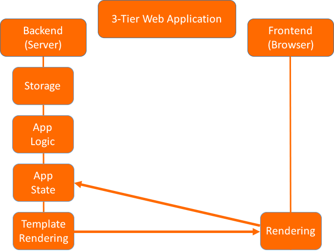
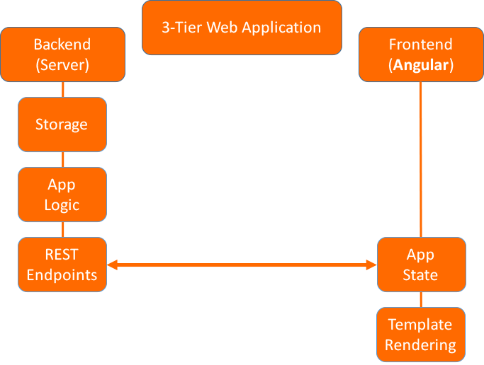

Web frontend development with TypeScript + Angular2
Connect to Slides: http://127.0.0.1:1947/
Overview
- Why AngularJS?
- AngularJS in a nutshell
- TypeScript in a nutshell
- Angular 2 Overview
- Angular 2 Components
- Angular 2 Data bindings
- Angular 2 Core Features
- Angular 2 Quo vadis?
Prelude: Classic Web Applications
Why AngularJS ?
2009: When using classic server-side web application frameworks, "frontend development" usually meant:
- Bunch of HTML files
- One or more SCSS/CSS files
- A bunch of JS files: "interactive DOM" + AJAX
- Some files of JS libs i.e. JQuery
Why AngularJS ?
“AngularJS is a frontend framework to build dynamic web applications. Developers are expected to follow certain rules derived from strong design principles. This allows encapsulating a lot of internal complexity and simplifies development.”
Why AngularJS ?
AngularJS in a nutshell
Separation of concerns: Model View Whatever
- Model = JS Objects
- View = HTML Template
- Whatever = App Logic and View Data Binding
AngularJS in a nutshell
Reactivity: Double Data Binding
- HTML Template engine included
- Live variable binding of view and controller
- User interaction triggers update
- Data-bindings are automatically updated (digest cycle)
AngularJS in a nutshell
Reusability: Modules
- Services: Encapsulate logic to be used in any controller
- Constants: Define static data application wide or per controller
- Directives: Reusable Code: HTML Template + JS Logic
AngularJS in a nutshell
Reusability: Dependency Injection
- All modules inject needed dependencies
- Inject anything without knowledge where or how it is implemented
- Injector as a module: dynamic injections
AngularJS in a nutshell
Show me!
Template
Hallo {{ user.firstName }} {{ user.lastName }}
Controller
angular.controller('SimpleCtrl', simpleCtrl);
simpleCtrl.$inject([ $scope ]);
function simpleCtrl($scope) {
$scope.user = {
firstName: 'Sven',
lastName: 'Vowé'
};
}
AngularJS in a nutshell
Convenience: Included Directives (overview)
- Core directives: overwrites HTML Tags for dynamic behaviour
- Form directives: overwrites HTML Form elements for dynamic behaviour
- Display directives: dynamic CSS class logic
- Event directives: enhanced event handling
AngularJS in a nutshell
Convenience: Included Services (excerpt)
- $http: AJAX / REST-Client
- $filter: data transformation
- $locale: basic i18n support
- $rootScope: Application-wide state
- $timeout: JS event loop asynchronity support
- $q: Asynchronous Promise support
AngularJS in a nutshell
Extensibility: Third-Party Addons
- angular-translate: full i18n support
- angular-nvd3: SVG chart library
- angular-mocks: Unit testing mock support
- ...
TypeScript in a nutshell
JS is so Evil? Tell me the Cons?
- incoherent typing
- unintuitive context
- no modularity
- weak standard library
Incoherent typing ?
var a = new Array();
>> []
a[0] = 'item';
>> [ 'item' ]
a['1'] = 'anotheritem';
>> [ 'item', 'anotheritem' ]
a.item = 'wtf?'
>> [ 'item', 'anotheritem' ]
a.item
>> 'wtf?'
TypeScript in a nutshell
What is TypeScript ?
TypeScript is a superset of JavaScript.
>> valid JavaScript is valid TypeScript (!)
TypeScript in a nutshell
Optional Types
JavaScript
function concat(a, b) {
return a + b;
}
function square(a, b) {
return a * b;
}
TypeScript
function concat(a : string, b : string) : string {
return a + b;
}
function square(a : number, b : number) : number {
return a * b;
}
TypeScript in a nutshell
Optional lightweight modules
JavaScript
var module = (function () {
return {
square: ...
};
})();
TypeScript
module utils {
export class Square {
...
}
}
TypeScript in a nutshell
Classes
JavaScript
var Car = (function () {
function Car(brand, model) {
this.brand = brand; this.model = model;
}
Car.prototype.label = function() {
return this.brand + " " + this.model;
};
return Car;
})();
TypeScript
class Car {
private brand : string; private label : string;
constructor(brand : string, label : string) {
this.brand = brand; this.label = label;
}
label() {
return this.brand + " " + this.label;
}
}
TypeScript in a nutshell
Interfaces
interface CarConfig {
wheels: boolean;
color: string;
}
class Car implements CarConfig {
constructor (public wheels: boolean, public color: string) {
...
}
}
TypeScript in a nutshell
Decorators
@decorator
class Class {
...
}
function decorator(target) {
// do some stuff
}
TypeScript in a nutshell
Minimal Lambdas
JavaScript
function sum(a, b) {
return a + b;
}
function concat(a, b, c) {
return [a, b, c];
}
TypeScript
(a, b) => (a + b);
(a, b, c) => [a, b, c];
TypeScript in a nutshell
TypeScript to JavaScript ?
- TypeScript is transpiled to JavaScript before runtime
- everything not needed at runtime is stripped beforehand i.e. typings
- JS generation for TypeScript features
- JS code optimization built-in
TypeScript in a nutshell
So why TypeScript ?
- introduces compile step
- useful syntactic additions
- backwards-compatible
- professional tooling and IDE support
- growing community
- many available typings (`tsd`) made available by popular libs
- sponsored and driven by Microsoft
Angular2 Overview
- Platform independent: Browsers, Web Worker, Native Apps, Server-side rendering
- Uses ShadowDOM
- Supports TypeScript, JavaScript and Dart
- Component-Only (!) driven development, each component has ShadowDOM
- Uses JavaScript ES2015
Angular2: A basic Component
App Main
app/app.component.ts
import { Component } from '@angular/core';
@Component({
selector: 'my-component',
templateUrl: 'my-component.html',
styleUrls: [ 'my-component.css' ]
})
export class MyComponent { }
Angular2: Component Hierarchy
“Angular2 Apps are built by creating a component tree. The main view is the root component, each child component is responsible for its representation, reactivity and styling - it acts as a view. ”
Angular2: Component Hierarchy

Angular2: Component Tree Basics
Child Component
import { Component } from '@angular/core';
@Component({
selector: 'my-component',
templateUrl: 'my-component.html',
})
export class ChildComponent { ... }
Parent Component
import { Component } from '@angular/core';
import { ChildComponent } from './my.component';
@Component({
selector: 'my-app',
templateUrl: 'my-app.html',
directives: [ ChildComponent ]
})
export class ParentComponent { ... }
Angular2: Data Binding
“Angular2 usually employs single-data binding. Templates display application data via interpolation and bindings. User interaction in the view yield events to update application data in the component.”
Angular2: Data Binding

Angular2: Data Binding
Event Binding
Attribute Binding

Class Binding
Style Binding
Angular2: Services
A service is a class with narrow purpose injectable by any component
import { Injectable } from '@angular/core';
import { Http } from '@angular/core';
@Injectable()
export class BackendService {
constructor(private http : Http) {}
...
}
import { Component } from '@angular/core';
import { BackendService } from './backend.service';
@Component({
selector: 'my-app',
templateUrl: 'my-app.html',
providers: [ BackendService ]
})
export class MyComponent {
constructor(private b: BackendService) { ... }
}
Angular2: Pipes
A pipe is used to transform data provided by the component within the template. Angular2 has useful pipes built-in:
{{ 'terms' | uppercase }}
{{ new Date() | date:'ddMMyyyy' }}
{{ 0.4711 | percent:'.2' }}
Angular2 Enhanced Features
Angular2 features reactive programming extensions using RxJs built around the concept of Observables.
- Observable = Publish + Subscribe Chain
- Angular can emit Events as Observables
- Angular uses Observables in its public API, i.e. Http
pizza.component.ts
import {Component} from '@angular/core';
import {Http, Response} from '@angular/http';
import {Observable} from 'rxjs/Rx';
@Component({
selector: 'demo-app',
templateUrl: 'pizza.component.html'
})
export class PizzaComponent {
public pizzas;
constructor(private http: Http) { }
grabPizzas() {
this.http.get('/shop/pizzas/all/')
.map((res:Response) => res.json())
.subscribe( data => { this.pizzas = data} );
}
}
pizza.component.html
Pizza Time
{{ pizza.name }}
Angular2 Core Features
- Components, Services
- Dependency Injection
- Data-binding and change detection
- Template Engine, Pipes
- Form handling
- Router module
- Unit test support
- E2E Test support
- Reactive Programming Event Streams: rxjs
AngularJS vs Angular2
| Features | AngularJS 1.x | Angular 2 |
|---|---|---|
| Dependency Injection | ⊕ | ⊕ |
| Template Engine | ⊕ | ⊕ |
| Interpolation | ⊕ | ⊕ |
| Class- Style- Attr- Bindings | ⊕ | ⊕ |
| Services | ⊕ | ⊕ |
| Directives | ⊕ | ⊖ |
| Controllers | ⊕ | ⊖ |
| Components | ⊕ (1.5+) | ⊕ |
Angular2: The State of the Art?
- Finales Release 2.0.0 erschienen am 15.09.2016
- substantielle Neuerungen und Optimierungen in Angular 2.x
- Offizielle Doku derzeit noch lückenhaft
- Rückwärtsinkompatibel zu Angular JS 1.x
- Migrationspfad nicht realistisch für komplexe Projekte
Sources
- ThoughtRAM, Exploring Angular 2 Blog
- Alvaro J. Genial, TypeScript in a nutshell
- Thomasz Ducin, JavaScript + Java = TypeScript, EnterJS 2016
- Michaela Lehr, Erste Schritte in Angular 2, EnterJS 2016
- Sebastian Müller, Data Flow Patterns in Angular 2
- Pascal Precht, Angular 2 Change Detection Explained, EnterJS 2016
- Sebastian Springer, Reactive Programming, EnterJS 2016
Backup: Angular2 by Example
Configure NodeJS
{
"name": "angular2-cofinpro-presentation",
"version": "0.0.1",
"dependencies": {
"@angular/common": "2.0.0-rc.6",
"@angular/compiler": "2.0.0-rc.6",
"@angular/compiler-cli": "0.6.0",
"@angular/core": "2.0.0-rc.6",
"@angular/forms": "2.0.0-rc.6",
"@angular/http": "2.0.0-rc.6",
"@angular/platform-browser": "2.0.0-rc.6",
"@angular/platform-browser-dynamic": "2.0.0-rc.6",
"@angular/router": "3.0.0-rc.2",
"@angular/upgrade": "2.0.0-rc.6",
"rxjs": "5.0.0-beta.11",
"systemjs": "0.19.27",
}
"devDependencies": {
"concurrently": "^2.2.0",
"lite-server": "^2.2.2",
"hljs typescript": "^1.8.10",
"typings":"^1.3.2"
}
Angular2 by Example
Configure TypeScript
{
"compilerOptions": {
"target": "es5",
"module": "commonjs",
"moduleResolution": "node",
"sourceMap": true,
"emitDecoratorMetadata": true,
"experimentalDecorators": true,
"removeComments": false,
"noImplicitAny": false
}
}
Angular2 by Example
App Main
app/app.module.ts
import { NgModule } from '@angular/core';
import { BrowserModule } from '@angular/platform-browser';
@NgModule({
imports: [ BrowserModule ]
})
export class AppModule { }
Angular2 by Example
App Main
app/app.component.ts
import { Component } from '@angular/core';
@Component({
selector: 'my-app',
template: 'Angular 2 example template
'
})
export class AppComponent { }
Angular2 by Example
App Main again
app/app.module.ts
import { NgModule } from '@angular/core';
import { BrowserModule } from '@angular/platform-browser';
import { AppComponent } from './app.component';
@NgModule({
imports: [ BrowserModule ],
declarations: [ AppComponent ]
})
export class AppModule { }
Angular2 by Example
Angular Bootstrapping
app/main.ts
import { platformBrowserDynamic } from '@angular/platform-browser-dynamic';
import { AppModule } from './app.module';
const platform = platformBrowserDynamic();
platform.bootstrapModule(AppModule);